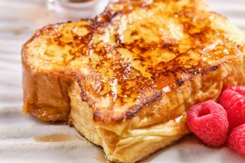

Tostadas Francesas
Un desayuno clásico y delicioso con pan dorado, canela y un toque de miel.

Tiempo: 45 minutos
Dificultad: Media
Ingredientes:
- 4 rebanadas de pan
- 2 huevos
- 100 ml de leche
- 1 cucharadita de canela
- 1 cucharadita de esencia de vainilla
- Miel o jarabe (opcional)
Preparación:
- En un bol, bate los huevos con la leche, la canela y la esencia de vainilla.
- Remoja las rebanadas de pan en la mezcla, asegurándote de que queden bien impregnadas.
- Calienta una sartén con un poco de mantequilla a fuego medio.
- Cocina las rebanadas de pan por ambos lados hasta que estén doradas.
- Sirve calientes con miel, jarabe o frutas frescas al gusto.